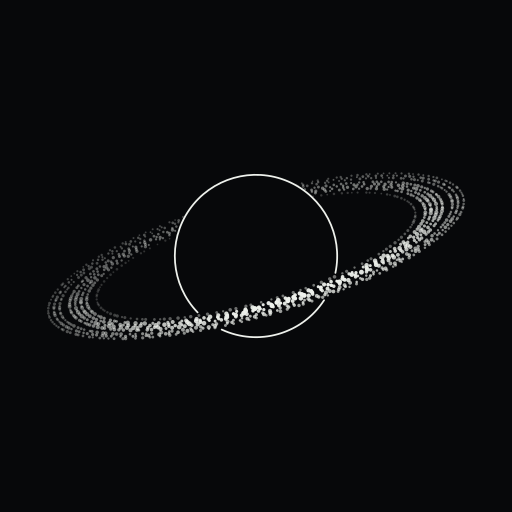

Remote / connect your computer
Pair this phone
On the computer: Settings, Remote, Browser. Enter the PIN shown there.
Tip: add k-hole to your Home Screen first (Share, Add to Home Screen) and pair in there: it runs full screen, in portrait or landscape.